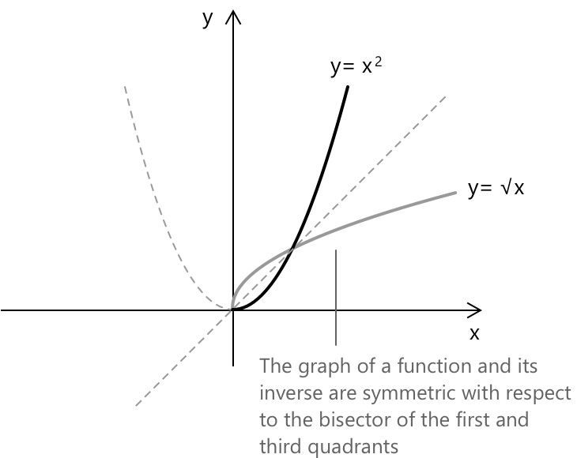

Обернена функція
Що таке обернена функція
У вступі до функцій ми бачили, що функція \( f: X \to Y \) називається бієктивною, якщо вона одночасно є ін'єктивною та сюр'єктивною, тобто для кожного \( y \in Y \) існує єдиний \( x \in X \), такий що \( f(x) = y \).
- \( X \) — це область визначення.
- \( Y \) — це область значень (кодомен).
- Функція називається ін'єктивною, якщо для будь-яких \( x_1, x_2 \in X \), при яких \( x_1 \ne x_2 \), маємо \( f(x_1) \ne f(x_2) \). Іншими словами, для кожного \( y \in Y \) існує не більше одного \( x \in X \), такого що \( f(x) = y \).
- Функція називається сюр'єктивною, якщо для кожного \( y \in Y \) існує принаймні один \( x \in X \), такий що \( f(x) = y \).
Функція \( f : X \to Y \) є бієктивною тоді і тільки тоді, коли існує функція \( g : Y \to X \), така що:
- \( (g \circ f)(x) = g(f(x)) = x \) для кожного \( x \in X \)
- \( (f \circ g)(y) = f(g(y)) = y \) для кожного \( y \in Y \)
У цьому випадку функція \( g \) є єдиною і називається оберненою функцією до \( f \), що позначається як: \[ f^{-1} = g \]
\( (g \circ f)(x) = g(f(x)) \) називається композицією функцій, що означає спочатку застосування \( f \) до \( x \), а потім застосування \( g \) до отриманого результату.
Зроблення функції оберненою шляхом обмеження її області визначення
Розглянемо функцію \( f(x) = x^2 \), визначену на \( \mathbb{R} \). Це квадратична функція, графіком якої є парабола з вершиною в початку координат Декартової системи координат. На всій своїй області визначення \( \mathbb{R} \) функція не є оберненою, оскільки вона не є ін'єктивною: різні значення аргументу можуть давати однакове значення функції, наприклад \( f(-2) = f(2) \).
Однак, якщо ми обмежимо область визначення проміжком \( [0, +\infty) \), функція стане бієктивною і, отже, оберненою. У цьому випадку обернена функція має вигляд:
\[ f(x) = x^2 \rightarrow f^{-1}(x) = \sqrt{x} \quad \text{для} \; x \geq 0 \]

Графік функції та графік її оберненої функції симетричні відносно прямої \(y = x\), яка є бісектрисою першої та третьої чвертей Декартової площини.
Якщо функція \( f \) компонується зі своєю оберненою \( f^{-1} \), результатом є тотожна функція, яка відображає кожен елемент множини в самого себе:
\[ f(f^{-1}(x)) = f^{-1}(f(x)) = x \]
Як знайти обернену до загальної функції
-
Перевірте, чи є функція бієктивною, або визначте обмеження її області визначення, яке зробить її бієктивною.
-
Замініть \( f(x) \) на \( y \), щоб працювати з рівнянням \( y = f(x) \).
-
Поміняйте місцями змінні \( x \) та \( y \): запишіть \( x = f(y) \). Це відображає ідею обернення вхідних і вихідних даних.
-
Розв'яжіть рівняння відносно \( y \), виразивши його явно.
-
Перепишіть результат як \( f^{-1}(x) = \ldots \), використовуючи \( x \) як вхідну змінну для оберненої функції.
Приклад
Знайдемо обернену до функції \( f(x) = \dfrac{2x - 1}{x + 3} \).
Функція \( f \) є бієктивною на своїй області визначення \( \mathbb{R} \setminus {-3} \), оскільки вона строго зростає: її похідна завжди додатна. Це гарантує, що \( f \) є ін'єктивною, а оскільки образ \( f \) охоплює всі дійсні числа, за винятком однієї точки, вона також є сюр'єктивною на свою область значень.
Запишемо функцію у вигляді рівняння: \[ y = \dfrac{2x – 1}{x + 3} \]
Поміняємо \( x \) та \( y \) місцями
\[
x = \dfrac{2y - 1}{y + 3}
\]
Розв'яжемо відносно \( y \). Помножимо обидві частини на \( y + 3 \):
\[
x(y + 3) = 2y - 1
\]
Розкриємо дужки в лівій частині:
\[
xy + 3x = 2y - 1
\]
Перенесемо всі доданки зі змінною \( y \) в один бік і винесемо \( y \) за дужки:
\[\begin{align}
&xy – 2y = -1 – 3x\\[0.5em]
&y(x – 2) = -1 – 3x
\end{align}
\]
Знайдемо \( y \):
\[
y = \dfrac{-1 – 3x}{x – 2}
\]
Обернена функція має вигляд: \[ f^{-1}(x) = \dfrac{-1 - 3x}{x - 2} \]
Теорема про обернену функцію
Корисним результатом базового аналізу є одновимірна версія теореми про обернену функцію. Ідея досить інтуїтивна: якщо функція поводиться регулярно на проміжку, то її можна обернути без труднощів. Точніше, припустимо, що функція \(f\) є неперервною та диференційною на проміжку \(I\), і її похідна ніколи не перетворюється на нуль:
\[ f’(x) \neq 0 \quad \forall \, x \in I \]
За таких умов функція є строго монотонною на \(I\), що гарантує її оберненість на цьому проміжку. Як наслідок, на \(f(I)\) існує обернена функція \(f^{-1}\). Ця обернена функція є не тільки неперервною, а й диференційною, і її похідна визначається співвідношенням:
\[ \bigl(f^{-1}\bigr)'(y) = \frac{1}{f’\!\bigl(f^{-1}(y)\bigr)} \]
Цей результат показує, як локальна умова (похідна ніколи не стає рівною нулю) забезпечує глобальну властивість, таку як оберненість.